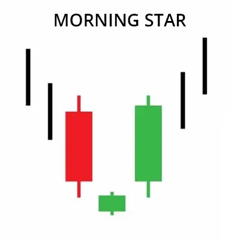

মর্নিংস্টার প্যাটার্ন হলো একটি ট্রেডিং প্যাটার্ন ঘা শেয়ার বাজারে দরপতনের পর
উধর্বমুখী প্রবণতার সুচনা নির্দেশ করে। এই প্যাটার্নটি তিনটি ক্যান্ডলেস্টিক বা
মোমবাতি দিয়ে গঠিত হয়। প্রথম ক্যান্ডলেস্টিক হলো একটি বড় দীর্ঘ নিম্নমুখী
ক্যান্ডলেস্টিক, দ্বিতীয় ক্যান্ডলেস্টিক হলো একটি ছোট দীর্ঘ উধর্বমুখী
ক্যান্ডলেস্টিক, এবং তৃতীয় ক্যান্ডলেস্টিক হলো একটি বড় দীর্ঘ উরধ্বমুখী
ক্যান্ডলেস্টিক।
প্রথম ক্যান্ডলেস্টক নির্দেশ করে যে বাজার দরপতন করছে। দ্বিতীয়
ক্যান্ডলেস্টিক নির্দেশ করে যে বাজারে বিক্রয় চাপ কমছে। এবং তৃতীয়
ক্যান্ডলেস্টিক নির্দেশ করে যে বাজারে উ্ধ্বমুখী প্রবণতা শুরু হয়েছে।
মর্নিংস্টার প্যাটার্ন একটি শক্তিশালী উ্ধ্বমুখী প্রবণতার ইঙ্গিত দেয়। এই প্যাটার্নাট
দেখা দিলে, শেয়ার বাজারে উধ্বমুখী প্রবণতায় ট্রেডিং করা যেতে পারে।